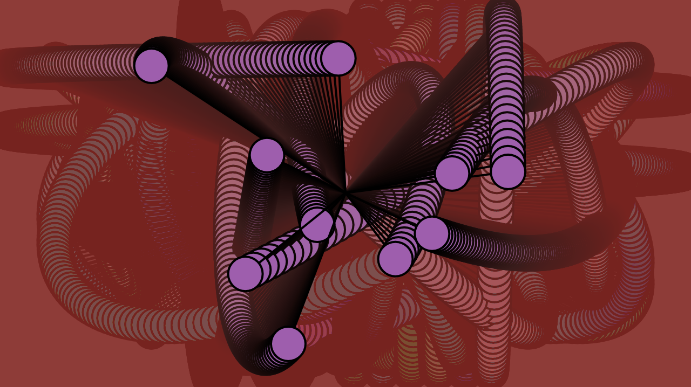

selected works
A "WHAT TO EXPECT?" FOR BIRTH DOULAS IN NYC

Brief: A full stack web application for NY Metro Doula Facebook group birth doulas to inform one another about what is available at certain NYC Hospitals.
Concept: While doulas often work on their own and social media provides a place to share information, there isn't a designated place to do so. This web application provides an easy and streamlined process to keep each other "in the know."
Role: UX/UI, web development and design
Tools: VS Code, Node.js, Express.js, Mongo DB Atlas, Postman, Command-line, Github, Glitch
Please note this video is best viewed full screen.
SAY HER NAME
This piece was a collaborative effort between Nailah Davis, Simone Salvo and Elizabeth Pérez


Brief: A narrative-shifting and socially engaged art installation.
Concept: Conceived by Nailah Davis’ artistic exploration of Black life and identity,this piece invites you to say Sandra Bland’s name aloud, keeping her story at the front of our collective consciousness. This project is a form of restorative justice.
Role: Concept development, UX/UI, physical computing, installation and programming.
Tools: Arduino Genuino Uno, p5.js, Neopixels, ultrasonic sensor, thermal printer, acrylic sheet, fish wire, repurposed shadow box
WRITING SAMPLES

Brief: Blogs written for Code Societies, Winter 2020 session.
Role: As one of 3 stewards for this session, I was tasked to write blog posts for 5 classes taught by Melanie Hoff, Neta Bomani, Allison Parrish, Ruha Benjamin and Harlo Holmes.
- Code Societies Orientation
- P2P Folder Poetry: An introduction to Re-introducing Yourself to Computers
- Computational Exploration of Magical and Divinatory Language, Part One
- Black Mirrors: Reimagining Race, Technology, and Justice
- Between Me and You: Encryption, Proxies, VPNs and Privacy with Harlo Holmes
GRAPHIC DESIGN


Brief: Flyer submission for NYU ITP's 2019 Winter Show
Concept: How can printed materials engage event attendees? I wanted to create a flyer that reminded people of coming together and using the most basic of materials for discovery and fun. I thought a fortune cookie would be perfect for this.
Role: Ideation, graphic design
Tools: Adobe Illustrator, Adobe Photoshop
CREATIVE CODE in p5.js
Digital with the spiritual: ML & Chakra (a musical composition)
This piece was made in collaboration with Elena Glaskova.

Brief: An exploration of chakras using machine learning.
Concept: Is it possible to train a model to teach us about ourselves? This interaction allows users to learn about the 7 chakras as well as the frequencies associated with them.
Role: Ideation, UX/UI and programming.
Tools: poseNet
Me Gritaron Negra!

Brief: Commerating the great Victoria Santa Cruz through code.
Concept: The famous performance piece led by Chilean national, Victoria Santa Cruz, illustrates the pride in being a Black woman. This piece attempts to capture and simultaneously draw the power in her voice as the audio plays in the background.
Role: Ideation, UX/UI and programming.
Tools: Speech recognition built in p5.js
Exploration of Dynamic Oscillators
Brief: Pendulums using trignometry to simulate complex forces in an enviroment.
Concept: How can code allow us to imagine forces in nature in a digital space? Remember SohCahToa? In this piece, the oscillation creates a hypnotic experience through color and movement.
Role: Ideation, UX/UI and programming.